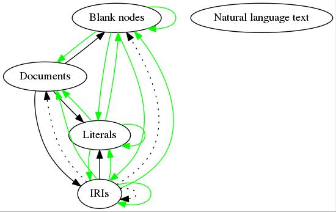

Linked Data Lab
September 9th, 2016
Stefan Schlobach & Wouter Beek
frank statements -p foaf:knows |
grep last-fm | nt2gml > last-fm.gml
Program
- 09:00-09:10 Introduction round
- 09:10-09:40 Linked Data Lab (presentation)
- 09:40-10:00 Find IRIs with LOTUS (hands-on)
- 10:00-10:30 Find documents (hands-on)
- 10:30-11:00 Coffee break
- 11:00-11:30 Find statements (hands-on)
- 11:30-12:30 The future of reasoning on the web (discussion)
“As long as there was no data, reasoning was no problem at all; when we had a little data, reasoning became a mild problem, and now we have Big Data, reasoning has become an equally Big Problem.”
An old AI dream come true?
- Semantic Web = Well curated knowledge (ontologies)
- Web of Data = Unlimitted Data
Publishing Paradigms
- Data dumps
- Triple stores
- The things inbetween (LDF,HDT)
Linked Data Lab overview
After 15 years most data cannot be automatically:
- found
- read
- queried
- reasoned over (only implicit in this presentation)
Many PhD students' worse nightmare...
Problem 1
Most data cannot be found
- SotA comparable to Yahoo! index anno 1995: hierarchy of links / catalogues (CKAN, LOV, VoID-store)
- Most SW datasets are not available online.
- Most online datasets are not registered in any catalogue.
Problem 2
Most data cannot be read
Freebase 'Monkey' (< 10% syntactically correct)
The WWW is not standards-compliant either, but:
- WWW tools optimized for common errors
- WWW consumers have human-level intelligence
Why is data dirty?
- Character encoding issues
- Socket errors
- Protocol errors
- Corrupted archives
- Authentication problems
- Syntax errors
- Wrong metadata
- Lexical form ? value
- Non-canonical lexical form
- Logically inconsistent
- ...
Problem 3
Most data cannot be queried
- Data dumps are the most popular deployment strategy
- Many live queriable datasets have a custom API
- Most custom APIs are not self-describing
- Many SPARQL endpoints enforce restrictions
- Most SPARQL endpoints that do not enforce restrictions have low availability
- Different SPARQL endpoints enforce different restrictions
- Different SPARQL endpoints implement different subsets of different versions of the SPARQL standard
- Web-scale federated querying has not even been considered
Query endpoint availablility according to LODStats

SPARQL cannot fulfill the role of SW query language
There are millions of data documents but only hundreds of live query endpoints with reasonable availability.
Existing deployment techniques are unable to close the gap between downloadable data dumps and live queryable data.
Data is growing faster than SPARQL deployment uptake.
Problem 4
Most data cannot be reasoned over
- No standardized way of selecting the entailment regime in SPARQL
- Some entailment results cannot be expressed in RDF
- Most triple stores only implement subsets of RDF(S) and OWL entailment
- Different triple stores implement different subsets of different version of RDF(S) and OWL
- Web-scale reasoning has only been performed in the lab
- Federation does not scale to hundreds of thousands of endpoints
Why is it not working?
[1] Distributed approach
Coordination techniques:
- Standards
- Guidelines
- Best practices
- Tools
Targeted towards humans
Inherently slow
Mixed results after 15 years
[2] Data navigation broken by design

[3] Broken cost-benefit model

[3] Broken cost-benefit model
Allocative efficiency: the price a consumer pays should equal the marginal cost of producing the consumed service. Since a client pays nothing and the marginal cost of production is relatively high, the SPARQL paradigm is inherently far removed from allocative efficiency.
- Publishing large volumes of high-quality data is penalized.
- Consuming large volumes of data / asking DDOS-like queries is free.
[4] Complex Usefullness/Cost Balance
- Useful publishing is expensive
- Cheep publishing often not useful
How to redeploy the Semantic Web?
- Data collection
- Data cleaning
- Data publishing
- Data consumption
- Text-based search
- Web-scale BGP answering
- Web-scale backwards chaining
[1] Data collection
- Scrape catalogues
- Custom API (CKAN)
- HTML (VoID Store, LOV)
- Interpret metadata vocabularies (VoID,DCAT)
- Scrape the WWW for RDFa, Schema.org (Mika2012)
- Craw dereferenceable IRIs
- Hard-craft a seed list
- Crowd-source the seed list
[2] Data cleaning
New solution for data cleaning
(1) Automate conformity to standards
"Days not decades"
(2) Tools ? Web Service
lodlaundromat.org


Beek & Rietveld & Bazoobandi & Wielemaker & Schlobach “LOD laundromat: A Uniform Way of Publishing Other People’s Dirty Data” ISWC 2014
[3] Data publishing
Fix the cost/benefit model
(1) Publishing data is free
(2a) Asking more questions increases client costs
(2b) Asking more complex questions increases client costs
How to query >30B statements
 Rietveld & Verborgh & Beek & Vander
Sande & Schlobach, “Linked Data-as-a-Service: The
Semantic Web Redeployed” ESWC 2015
Rietveld & Verborgh & Beek & Vander
Sande & Schlobach, “Linked Data-as-a-Service: The
Semantic Web Redeployed” ESWC 2015
SW layer cake

Alt. SW layer cake
 Beek & Rietveld & Schlobach & Van Harmelen
“LOD Laundromat: Why the Semantic Web Needs
Centralization (Even If We Don't Like It)” IEEE
Internet Computing 20 (2) p.78-81, 2016
Beek & Rietveld & Schlobach & Van Harmelen
“LOD Laundromat: Why the Semantic Web Needs
Centralization (Even If We Don't Like It)” IEEE
Internet Computing 20 (2) p.78-81, 2016
Why it works: HDT + SSD + LDF
HDT: Disk-based, efficient yet queryable storage
SSD: Disks become faster and cheaper
LDF: BGP queries require client-side joins
Data consumption tools
- From Natural language to Resources (Lotus)
- From Resources to documents (Index)
- Resources in the knowledge graph (LDF)
- Properties of the graphs (Metadata)
- Glue between LOD Laundromat service, Meta-Data and Indexes (Frank)
[4] Data consumption
Data navigation fixed
[5] Natural language text search
LOTUS
Natural language entry point to LOD Laundromat
Large-scale: 4,334,672,073 natural language literals
Configurable: Filtering based on original language, auto-detected language, subject, predicate, 32 retrieval options
F. Ilievski & W. Beek & M. Van Erp & L. Rietveld & S. Schlobach, “LOTUS: Adaptive Text Search for Big Linked Data”, ESWC 2016
 F. Ilievski & W. Beek & M. Van Erp &
L. Rietveld & S. Schlobach, “LOTUS: Adaptive Text
Search for Big Linked Data”, ESWC 2016
F. Ilievski & W. Beek & M. Van Erp &
L. Rietveld & S. Schlobach, “LOTUS: Adaptive Text
Search for Big Linked Data”, ESWC 2016
LOTUS in numbers
| Metric | Number |
|---|---|
| # literals | 12,018,939,378 |
| # integers and dates | 6,699,148,542 |
| # indexed strings | 5,319,790,836 |
| # distinct sources | 508,244 |
| # distinct languages | 713 |
| # hours to create index | 56 |
| disk space use | 484.77 GB |
Why bother? LOD Lab
Web-scale evaluation (and reasoning)
An example for scaling up to Web Size.How generalizable is SW research?

ISWC 2014 Research Track:
- 17 datasets used in total
- 1-6 datasets used per paper (avg. 2)
The ‘economics’ of WoD evaluations
- Dataset cleaning is manual and wasteful
- Cleaning the next dataset requires a comparable amount of work
- High cost per evaluation: Disincentivizes reproducibility
- High cost per dataset: Disinsentivizes generalizability
The WoD is a poor evaluation platform
- Datasets cannot be found
- IRI dereferening is broken
- SPARQL enforces restrictions
- Bulk downloads cannot be queried online
- Bulk downloads are not standards conform
- Corrections cannot be written back to the WoD
Result
- Evaluations are run locally
- Data cleaning is performed on local copy
- Results of data cleaning are removed with the local copy
Reproducing “RDF Vault” (Bazoobandi 2015)
| RDF Vault | LOD Lab |
|---|---|

|

|
Rerun the experiment per bin (e.g., 1,000-100,000):
frank documents --downloadUri \
--minTriples 1000 --maxTriples 100000 |
./runVaultExperimentForFile
Reproducing “Linked Data Best Practices” (Schmachtenberg 2014)
| Original | LOD Lab | ||||
|---|---|---|---|---|---|
| Prefix | #datasets | %datasets | Prefix | #documents | %documents |
| rdf | 996 | 98.22% | rdf | 639,575 | 98.40% |
| rdfs | 736 | 72.58% | time | 443,222 | 68.19% |
| foaf | 701 | 69.13% | cube | 155,460 | 23.92% |
| dcterm | 568 | 56.01% | sdmxdim | 154,940 | 23.84% |
| owl | 370 | 36.49% | worldbank | 147,362 | 22.67% |
Rerun for all documents:
frank documents --downloadUri |
./countNamespacesForDocument
Large-scale Data Quality Improvement (1/2): Datatypes

Large-scale Data Quality Improvement (2/2): Language tags

Evaluation results for ±600,000 datasets (1/2)

Evaluation results for ±600,000 datasets (2/2)
 de Rooij & Beek & Bloem & van Harmelen & Schlobach, “Are Names Meaningful? Quantifying Social Meaning on the Semantic Web” ISWC 2016 (to appear).
de Rooij & Beek & Bloem & van Harmelen & Schlobach, “Are Names Meaningful? Quantifying Social Meaning on the Semantic Web” ISWC 2016 (to appear).
LOTUS
Natural language entry point to LOD Laundromat
Large-scale: 4,334,672,073 natural language literals
Configurable: Filtering based on original language, auto-detected language, subject, predicate, 32 retrieval options
F. Ilievski & W. Beek & M. Van Erp & L. Rietveld & S. Schlobach, “LOTUS: Adaptive Text Search for Big Linked Data”, ESWC 2016
Anytime Reasoning based on adding axioms

Program
- 09:00-09:10 Introduction round
- 09:10-09:40 Linked Data Lab (presentation)
- 09:40-10:00 Find IRIs with LOTUS (hands-on)
- 10:00-10:30 Find statements (hands-on)
- 10:30-11:00 Coffee break
- 11:00-11:30 Find documents (hands-on)
- 11:30-12:30 The future of reasoning on the web (discussion)
Find IRIs with LOTUS
lotus.lodlaundromat.org
Find ‘monkey’
“Exclude blank nodes”
http://lotus.lodlaundromat.org/retrieve?string=monkey&noblank=trueFilter by subject: “Resources from OpenCyc”
http://lotus.lodlaundromat.org/retrieve?string=monkey&noblank=true&subject=sw.opencyc.orgFilter by predicate: “Exclude predicates containing ‘label’)”
http://lotus.lodlaundromat.org/retrieve?string=monkey&noblank=true&subject=sw.opencyc.org&predicate=NOT%20labelFilter by language tag: “Only literals with ‘en’ tag”
http://lotus.lodlaundromat.org/retrieve?string=monkey&noblank=true&subject=sw.opencyc.org&predicate=NOT%20label&langtag=enOverview of all options
http://lotus.lodlaundromat.org/docsFind documents with
LOD Laundromat
With resource & namespace index
With SPARQL
With Frank
Find documents by resource (index)
“Documents with resource ‘owl:inverseFunctionalProperty’.”
Find documents by namespace (index)
“Documents with namespace ‘owl’.”
http://index.lodlaundromat.org/ns2d/http%3A%2F%2Fwww.w3.org%2F2002%2F07%2Fowl%23
Find documents by metadata (SPARQL)
“Documents of size 880-900.”
SELECT ?doc WHERE {
?doc llo:triples ?n
FILTER(?n >= 880)
FILTER(?n <= 900)
}
Find documents by metadata (Frank)
“Documents of size 880-900.”
frank documents --minTriples 880 --maxTriples 900
Find documents by degree (SPARQL)
“Documents with average in-degree 3 or higher.”
SELECT ?doc ?x WHERE {
?doc llm:metrics/llm:inDegree/llm:mean ?x
FILTER(?x >= 3)
}
Find documents by degree (Frank)
“Documents with average in-degree 3 or higher.”
frank documents --minAvgInDegree 3
Find documents by namespace (Frank)
frank documents --namespace http://www.w3.org/2006/vcard/ns#
Find statements with Frank
 Beek & Rietveld. “Frank: The LOD Cloud at your Fingertips” Extended Semantic Web Conference: Developers Workshop, 2015.
Beek & Rietveld. “Frank: The LOD Cloud at your Fingertips” Extended Semantic Web Conference: Developers Workshop, 2015.
Without Frank
- Find a document in the index (index.lodlaundromat.org)
- Follow the Linked Data Fragments ‘Browse’ link ()
- Send a Linked Data Fragments request (subject/predicate/object)
Example “Info about ‘dbr:Monkey’ from one document”:
With Frank
Info about ‘dbr:Monkey’ from any document:
frank statements -s dbr:Monkey
+ show the document
frank statements -s dbr:Monkey -g
Combine multiple Frank calls
frank documents --namespace void --minTriples 1000 |
frank statements --predicate foaf:name |
head -n 5
europa:Eurostat foaf:name "Eurostat".
tw:ReviewCommission foaf:name "Review Commission"^^xsd::string.
sw:gianluca-demartini foaf:name "Gianluca Demartini".
sw:mohammad-mannan foaf:name "Mohammad Mannan".
sw:tom-minka foaf:name "Tom Minka".
Combine Frank with external programs
frank statements -p foaf:knows |
grep last-fm | ./ntriplesToGml > last-fm.gml
Program
- 09:00-09:10 Introduction round
- 09:10-09:40 Linked Data Lab (presentation)
- 09:40-10:00 Find IRIs with LOTUS (hands-on)
- 10:00-10:30 Find documents (hands-on)
- 10:30-11:00 Coffee break
- 11:00-11:30 Find statements (hands-on)
- 11:30-12:30 The future of reasoning on the web (discussion)